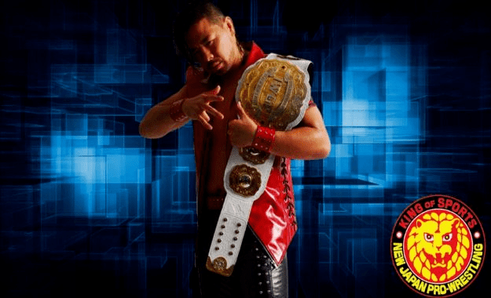
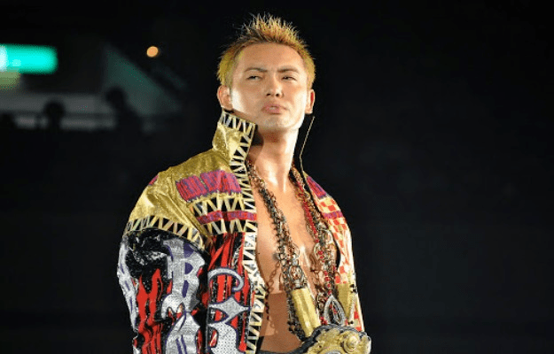

Nacimiento del grupo
El 5 de abril de 2009, Toru Yano se volvió contra el líder de Great Bash Heel (G.B.H), Togi Makabe, provocando su derrota contra Shinsuke Nakamura. En el transcurso de ese mes, todos los miembros de G.B.H, a excepción de Tomoaki Honma, dejaron a Makabe y el grupo, uniéndose a Nakamura y Yano. El 23 de abril, el grupo fue nombrado oficialmente como CHAOS, con Nakamura y Yano como sus dos figuras centrales.
Liderazgo de Nakamura (2009-2016)
Después de que CHAOS se formó,Giant Bernard y Karl Anderson (conocidos como Bad Intentions), recibieron una oportunidad por el campeonato de parejas de IWGP, pero no pudieron derrotar a los campeones defensores Team 3D (Brother Ray y Brother Devon). También en ese mismo día, Black Tiger V fue derrotado por Tiger Mask en una lucha de máscara vs. máscara revelándose el primero como Tatsuhito Takaiwa lo cual ocasionó que luego dejara el grupo más tarde.
El 27 de septiembre, Nakamura derrotó a Togi Makabe para ganar el Campeonato Peso Pesado de IWGP por tercera vez. Al ganar el título, Nakamura provocó la ira de Antonio Inoki anunciando su plan de querer restaurar el "Strong Style" capturando el cinturón original del campeonato peso pesado de la IWGP de Inoki para reemplazar el cinturón de título de cuarta generación que el propio Nakamura tenía. Del 17 de octubre al 1 de noviembre, CHAOS participó en la G1 Tag League 2009, en donde Bad Intentions (Bernard y Anderson) derrotaron a Apollo 55 (Prince Devitt y Ryusuke Taguchi) en la final para ganar el torneo. El 4 de enero de 2010, en Wrestle Kingdom IV en Tokyo Dome, Bad Intentions recibió un combate por el Campeonato en Parejas de la IWGP, pero perdió ante No Limit (Tetsuya Naito y Yujiro Takahashi) en un combate en parejas de tres vías que también involucró a Team 3D (Brother Devon y Brother Ray).
La expulsión de Bad Intentions
El 4 de abril de 2010, Yano e Iizuka atacaron a Anderson y lo expulsaron de CHAOS con la ayuda de Tetsuya Naito y Yujiro Takahashi, quienes se unieron al grupo en el proceso. Giant Bernard, quien no estuvo presente al momento del ataque, dejó CHAOS más tarde.
El 19 de julio, Nakamura recibió una revancha por el campeonato peso pesado de la IWGP, pero fue derrotado una vez más por Makabe. Del 6 al 15 de agosto, Yano, Naito, Takahashi y Nakamura participaron en el torneo G1 Climax 2010, en el cual Nakamura ganó cuatro de los siete combates dentro de su bloque, incluyendo una victoria sobre el eventual ganador Satoshi Kojima y estuvo liderando su bloque hasta el día final del G1, donde empató contra Go Shiozaki de Pro Wrestling Noah y por lo tanto perdió la final del torneo por un punto. El empate con Shiozaki llevó a una lucha sin límite de tiempo en Pro Wrestling Noah el 22 de agosto, donde Nakamura fue vencido. El 13 de noviembre, Jado y Gedo derrotaron a sus compañeros de CHAOS Davey Richards y Rocky Romero en la final del torneo Super J Tag League 2010 quedándose con el prestigioso trofeo.
La expulsión de Tetsuya Naito
El 4 de enero del siguiente año, en el evento Wrestle Kingdom V en el Tokyo Dome, Naito desafió sin éxito a Jeff Hardy por el campeonato mundial peso pesado de TNA pero Nakamura tomó revancha por su derrota ante Go Shiozaki al vencerlo en un combate individual más tarde esa noche. El 26 de mayo, Takahashi y todos los miembros de CHAOS atacaron en conjunto a Naito y lo expulsaron del grupo.
El 18 de junio, Mitsuhide Hirasawa se volvió contra Seigigun y su líder Yuji Nagata, renombrándose a sí mismo "Hideo Saito" y uniéndose a CHAOS.El 10 de octubre en Destruction '11, Richards y Romero derrotaron a Prince Devitt y Ryusuke Taguchi para ganar el IWGP Junior Heavyweight Tag Team Championship por primera vez. Más tarde esa noche, Tanaka redujo a MVP para ganar el Campeonato Intercontinental de IWGP. El 12 de noviembre en el evento Power Struggle, Richards y Romero derrotaron a Kushida y Tiger Mask para retener los campeonatos de peso junior de IWGP. Más tarde en esa noche, Tanaka hizo su primera defensa exitosa del título contra Hirooki Goto. El 4 de diciembre, Tanaka derrotó al MVP en una revancha para retener el campeonato intercontinental de la IWGP con la ayuda de Yujiro Takahashi. Esa misma noche, el comportamiento de Saito y sus pobres resultados finalmente llevaron al resto de Chaos a expulsarlo del grupo. El 28 de diciembre, Yoshi-Hashi se unió al grupo.
El camino a la cima de Kazuchika Okada
El 4 de enero de 2012, en Wrestle Kingdom VI en el Tokyo Dome el recién llegado Yoshi-Hashi fue derrotado en cinco minutos por Kazuchika Okada en su combate de regreso a NJPW.El 12 de febrero en The New Beginning, No Remorse Corps(Romero y Richards) vencieron a Apollo 55 para recuperar los campeonatos de peso junior de IWGP.En el evento principal, Okada derrotó a Tanahashi para ganar el Campeonato Peso Pesado de IWGP por primera vez. El 21 de abril, Low Ki regresó a NJPW, uniendose a CHAOS y luego haciendo equipo con Gedo, Jado y Rocky Romero en un combate por equipos para derrotar a Jyushin Thunder Liger, Prince Devitt, Ryusuke Taguchi y Tiger Mask, con Low Ki cubriendo al campeón de peso junior de IWGP Devitt para obtener así la victoria.El 3 de mayo en Wrestling Dontaku 2012, Low Ki derrotó a Prince Devitt para ganar el Campeonato Peso Pesado Junior de la IWGP, mientras que Iizuka y Yano vencieron a Hiroyoshi Tenzan y Satoshi Kojima para ganar el Campeonato en Parejas de la IWGP. En el último día del torneo Best of the Super Juniors, Alex Koslov se unió a CHAOS y junto con Rocky Romero conformaron Forever Hooligans logrando 2 reinados como campeones de parejas de peso junior de IWGP y un reinado como campeones de parejas de Ring of Honor.
El 16 de junio en Dominion 6.16, Brian Kendrick se unió al grupo haciendo equipo con Gedo y Jado en un combate de equipos, donde derrotaron a Jyushin Thunder Liger, Kushida y Tiger Mask donde Kendrick cubrió a Kushida. Del 1 de agosto al 12 de agosto, Okada, Nakamura, Yano y Takahashi participaron en el G1 Climax 2012. Durante el torneo, Okada luchó en el mismo bloque de Shinsuke Nakamura en donde fue derrotado por Nakamura el 5 de agosto. En la final el 12 de agosto, Okada derrotó a Karl Anderson para ganar el torneo. El 10 de marzo de 2013, Yano e Iizuka derrotaron a Naomichi Marufuji y Takashi Sugiura para convertirse en los nuevos campeones en parejas de GHC. Del 11 al 23 de marzo, en el torneo New Japan Cup 2013, Okada venció en la final a Hirooki Goto.
El 14 de octubre en King of Pro-Wrestling, Takahashi desafió sin éxito a su ex compañero Tetsuya Naito por el campeonato de peso abierto NEVER y la oportunidad para retar al campeón mundial peso pesado de IWGP. En el evento principal, Okada tuvo su quinta defensa exitosa como campeón mundial peso pesado de IWGP contra Hiroshi Tanahashi en lo que Tanahashi afirmó que sería su desafío final por el título. El 4 de enero de 2014, en Wrestle Kingdom 8 en Tokyo Dome, Okada derrotó a Naito por su séptima defensa del título. Más tarde, en el evento principal, Nakamura perdió el campeonato intercontinental de IWGP ante Hiroshi Tanahashi. En el evento The New Beginning in Osaka, Ishii venció a Tetsuya Naito para convertirse en el tercer campeón de peso abierto de NEVER, ganando su primer título en NJPW.
La traición de Takashi Iizuka y Yujiro Takahashi
El 3 de mayo en Wrestling Dontaku 2014 en el evento principal, el reinado de 13 meses de Okada como campeón peso pesado de IWGP llegaría a su fin, debido a su derrota frente a AJ Styles luego de que Yujiro Takahashi lo atacara por la espalda, dejando este último a CHAOS y uniéndose al grupo de Styles conocido como Bullet Club. El 25 de mayo en el evento Back to the Yokohama Arena, Yano e Iizuka se enfrentaron a Minoru Suzuki y Shelton Benjamín en una lucha por equipos, en la cual Iizuka ataca a su compañero Yano, ayudando a Suzuki a ganar el combate dejando CHAOS para luego pasar a formar parte de Suzuki-gun.
Liderazgo de Okada (2016-presente)
Salida de Nakamura del grupo
El 4 de enero en Wrestle Kingdom 10 en Tokyo Dome, Roppongi Vice(Trent Berreta y Rocky Romero) fracaso por tercera vez intentando ganar los campeonatos de parejas de peso junior de IWGP, Toru Yano se asoció con el equipo de Jay Briscoe y Mark Briscoe para derrotar a Bad Luck Fale de Bullet Club, Tama Tonga y Yujiro Takahashi convirtiéndose en campeón inagural del campeonato de peso abierto de 6 hombres NEVER. En la misma noche Okada derrotó al ganador del G1 Climax 2015 Hiroshi Tanahashi en el evento principal para retener el campeonato peso pesado de IWGP.Horas después del evento se informó que Nakamura había aviso a NJPW en la mañana, anunciando que dejaba la promoción para ir a WWE. Nakamura permaneció bajo el contrato de NJPW y se esperaba que terminara sus fechas contratadas con la promoción antes de irse. El 12 de enero, NJPW confirmó la próxima salida de Nakamura y anunció que también sería despojado del campeonato intercontinental de IWGP. El 11 de febrero en el evento The New Beginning in Osaka, Okada derrotó a Hirooki Goto en el evento principal para hacer su tercera defensa exitosa del título e invitó a Goto a unirse al grupo, pero este se negó. Durante los siguientes eventos, Okada intentó de muchas maneras que Goto se uniera a CHAOS en múltiples ocasiones, pero fue rechazado cada vez.
A principios de 2016, Chaos entró en una rivalidad con Los Ingobernables de Japón(L.I.J).El 3 de marzo se anunció que Will Ospreay se había unido a CHAOS. Después del combate final en el torneo New Japan Cup, Hirooki Goto finalmente aceptó estrechar la mano de Okada y su invitación al grupo, después de que este lo salvo de un ataque realizado por Naito y demás miembros de L.I.J. El 10 de abril en Invasión Attack, Goto y Tomohiro Ishii derrotaron a Los Ingobernables de Japón (Bushi y Evil), y Roppongi Vice Beretta y Rocky Romero derrotaron a Matt Sydal y Ricochet para ganar el campeonato en parejas peso pesado junior de IWGP por segunda vez.
Durante el G1 Climax, Okada fue derrotado por el representante de Pro Wrestling Noah Naomichi Marufuji, comenzando un feudo entre NJPW y Pro Wrestling Noah, mientras que Ishii terminó con un récord de cuatro victorias y cinco derrotas. Una de las victorias de Ishii fue sobre su compañero de grupo y el actual campeón de peso pesado de la IWGP, Kazuchika Okada. Por otra parte, Yoshi-Hashi terminó el torneo último en su bloque con un récord de tres victorias y seis derrotas. A pesar de esto, la victoria de Yoshi-Hashi frente a Kenny Omega hizo que se convirtiera en el primer retador del contrato de Omega por el campeonato de peso pesado de IWGP después de que este último ganara el torneo. Desafortunadamente, Yoshi-Hashi perdería el combate, dejando ir una oportunidad de poder estar en el combate estelar de Wrestle Kingdom.
El 5 de enero de 2018 Jay White rechazó unirse al Bullet Club, atacando a Omega después. Al día siguiente, White se unió a CHAOS. White derrotó a Kenny Omega para convertirse en el segundo campeón de peso pesado de los Estados Unidos de la IWGP. En el evento Dominion 6.9 en Osaka-jo Hall, Ospreay perdió el Campeonato Peso Pesado Junior de la IWGP ante Himoru Takahashi, y Okada perdió el Campeonato Mundial Peso Pesado de la IWGP ante Omega en un combate de 2 a 3 caídas, finalizando su reinado de 720 días. Al final del torneo G1 Climax, Okada decidió separarse de su manager y mentor Gedo.
Traición de Jay White y Gedo
En el evento Destruction, el equipo de Tanahashi y Great Bash Heel (Togi Makabe y Tomoaki Honma) derrotaron al equipo de Jay White, Okada y Yoshi-Hashi. En esa misma noche, Omega retuvo con éxito su IWGP World Heavyweight Championship contra Ishii. En la tercera noche del evento Destruction, Tanahashi vencio a Okada en el evento principal y retuvo su contrato el cual le permitia una oportunidad por el campeonato mundial peso pesado de IWGP en el evento Wrestle Kingdom. Después del combate, Jay White atacó tanto a Tanahashi como a Okada, así como a Rocky Romero cuando este se negó a darle a White una silla y a Yoshi-Hashi cuando intentó intervenir para rescatar a Okada. Gedo rapidamente mientras intervino en un intento de detener a White pero cuando tomo la silla finalmente también atacó a Okada y declaró que White era el verdadero ganador del G1 Climax y de la oportunidad por el campeonato mundial peso pesado de IWGP.El 8 de octubre, en King of Pro-Wrestling, Jado, junto con White, Gedo y miembros del Bullet Club, atacaron a Okada, dejando de esta manera el grupo.
Traición de Will Ospreay
Durante el torneo G1 Climax 30, Will Ospreay estaba increíblemente confiado en sus comentarios tras bastidores, mostrando arrogancia, diferente a como él acostumbraba ser. En la noche final del bloque A Ospreay, con un récord de 5 victorias y 3 derrotas, se enfrentó a Okada, con un récord de 6 victorias y 2 derrotas; la victoria de Ospreay eliminaría a Okada del torneo. Durante el combate, Bea Priestley (pareja de Ospreay), apareció y distrajo al árbitro. Esto permitió a Tomoyuki Oka, entrar en el ring y atacar a Okada. Ospreay, al principio fingiendo no saber lo que pasó, atacó a Okada con su movimiento final(Stormbreaker) ganando el combate. Después del combate, Ospreay atacó a Okada con su movimiento(Hidden Blade) para reclamarle a Okada que él siempre fue el segundo y nunca podría ser una estrella estando debajo de Okada. Entre bastidores, Ospreay declaró que iba a dejar CHAOS y que comenzaría una nueva facción.
Traición de SHO
El 20 de agosto de 2020, Yoh sufriria una lesión que obligaría a él y a Sho a renunciar a sus títulos en parejas recientemente ganados. SHO competiría de manera individual hasta el regreso de YOH en 2021. Después de que ambos no pudieron capturar los títulos de peso pesado junior en parejas, la misma comenzó a competir como equipo de nuevo, sin embargo, terminaron sufriendo varias derrotas. A finales de julio, YOH, comenzó a sufrir una gran racha perdedora,tanto a nivel individual como en equipo. El 16 de agosto, Roppongi 3K(grupo que conformaban SHO y YOH) perdería otro combate en parejas ante El Desperado y Yoshinobu Kanemaru, después de que SHO decidiera no ayudar a YOH a evitar la rendición de este último por una llave de sumisión de Desperado. Después del combate SHO atacaría a YOH y afirmaría que ahora era peso muerto para él, disolviendo así el equipo. Sin embargo SHO permanecería como miembro de CHAOS hasta el 4 de septiembre, cuando derrotó a YOH en la noche 1 del evento Wrestle Grand Slam en el MetLife Dome. Después de la lucha, Sho se unió a Bullet Club, aceptando la camiseta que le dio Evil(miembro reciente del Bullet Club),dejando de esta manera CHAOS.
Expansión en All Elite Wrestling
En noviembre de 2021, Chuck Taylor y Trent Beretta, ahora parte de la promoción All élite Wrestling (AEW), se reincorporarían a CHAOS junto con los miembros de Best Friends (Orange Cassidy, Kris Statlander y Wheeler Yuta) después de ser invitados por Rocky Romero, por lo tanto, se establecería la rama de CHAOS en los EE.UU.